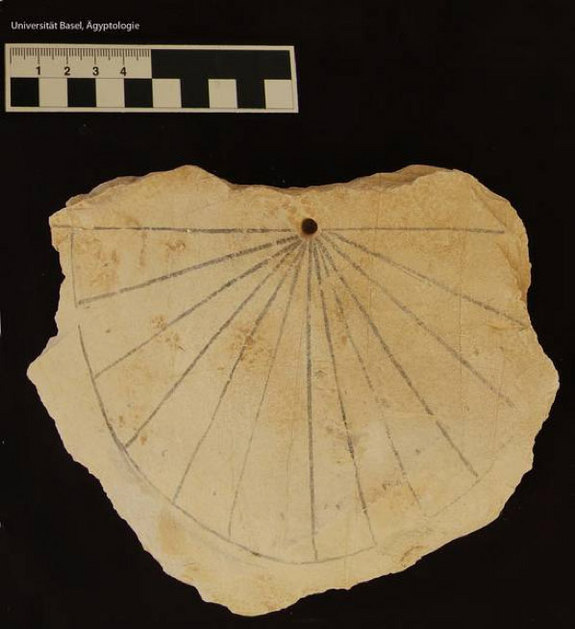
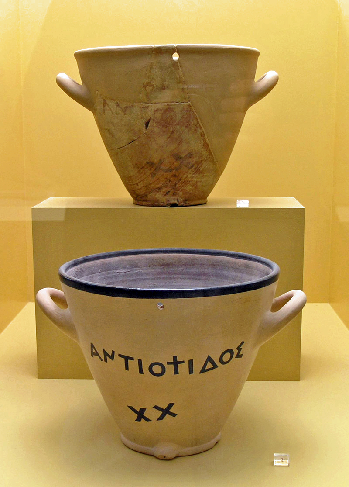
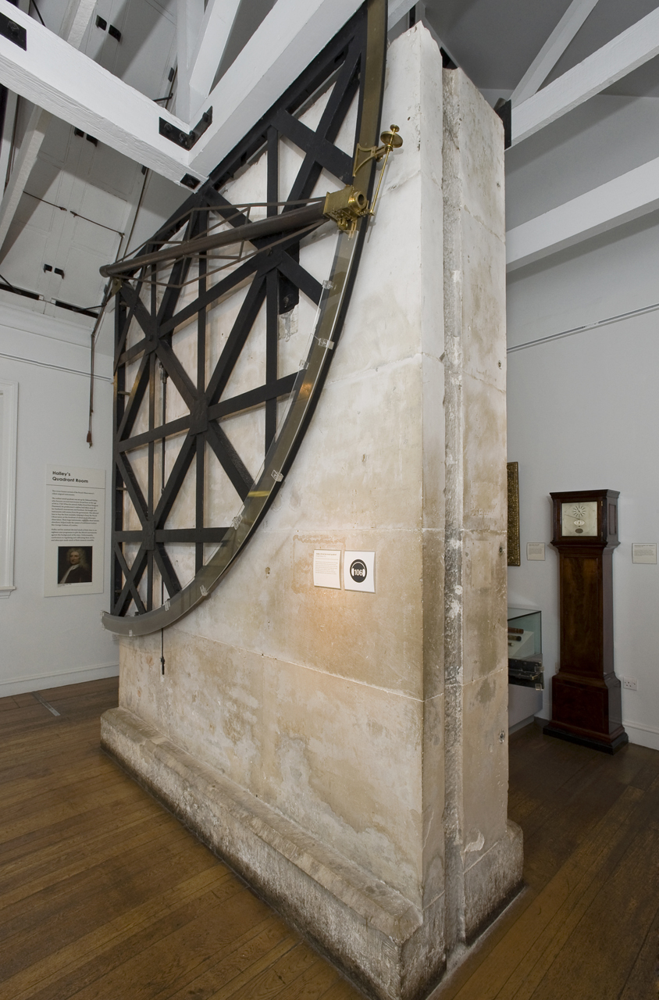
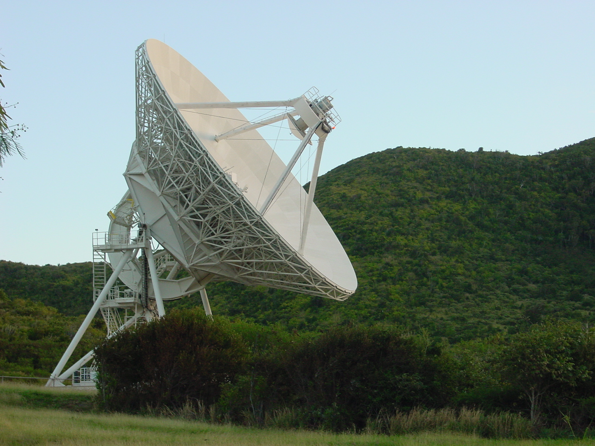
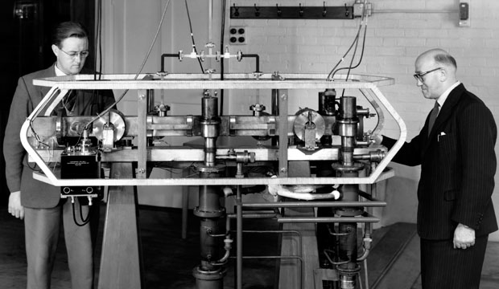
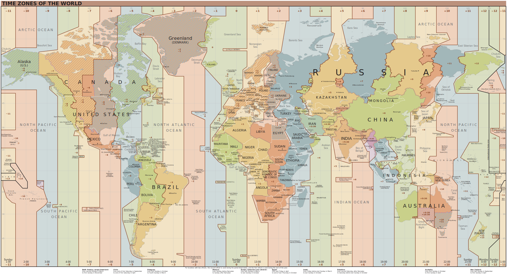

All I want for Christmas
is a negative Leap Second
Zeit-Standards
PeP et al. Sommerakademie 2024
Die zwei Arten, Zeit zu definieren

Älteste bekannte Sonnenuhr
Ägypten, ca. 1500 v.d.Z.

Griechische Wasseruhr (clepsydra)
ca. 400 v.d.Z.
Die zwei Arten, Zeit zu definieren

Quadrant, Royal Observatory, Greenwhich
John Bird, 1750

H4 Marine Chronometer
John Harrison, 1761
Die zwei Arten, Zeit zu definieren

Very Long Baseline Array
St. Croix, U.S. Virgin Islands, 1986

Caesium-133 Atomuhr, NPL
Jack Perry & Louis Essen, 1955
Die zwei Arten, Zeit zu definieren
Erdrotation
- Älteste Methode
- Einzige präzise Methode bis ca. 1760
- Entdeckung der Irregularität der Tageslänge erst 1934
- Langzeit und kurzzeit Trends
Zählen von festen Zeitintervallen
- Erfordert präzise Uhren
- Quarzuhren erstmals präziser als mittlerer Sonnentag ca. 1940er
- Heute: Caesium-Atomuhren
Definition der Sekunde
| Ab | Definition |
|---|---|
| ca. 1000 | $\frac{1}{24 \cdot 60 \cdot 60} = \frac{1}{86400}$ eines solaren Tages |
| 1956 | $\frac{1}{31\,556\,925.9747}$ des tropischen Jahres am 0. Januar 1900, 12 Uhr |
| 1967 | $\frac{9\,192\,631\,770}{\Delta \nu_\text{Cs}}$ $\Delta\nu_\text{Cs} =$ Frequenz des Hyperfeinstrukturübergangz von 133Cs |
| 203x? | Strontium Optical Lattice Clock? |
Ziel ist die Neudefinition der Sekunde, sobald neue Uhren zur Verfügung stehen, die über das Alter des Universums weniger als 1 Sekunde falsch gehen.
Zeitstandards: Wunschliste
- Orientiert sich an der relativen Position der Erde zur Sonne
- Tickt in festen Zeitintervallen, z.B. der SI-Sekunde
- Kontinuierlich, monoton
Die wichtigsten aktuellen Zeitstandards

Universal Time 1 (UT1)
-
Definiert über den Winkel des Nullmeridians zum Mittelpunkt der Sonne
$$\operatorname{ERA} = 2π(0.7790572732640 + 1.00273781191135448 · T_u) \operatorname{radians}$$
mit
$T_u = $ Tage seit
2000-01-01 12:00:00 UT1 - Mittelpunkt der Sonne schwer zu präzise genug zu bestimmen
- Geht nur Tagsüber
- Positions-Messung von Quasaren mittels VLBI Radioteleskopen
- Verantwortlich: Earth Rotation and Reference Systems Service (IERS)
- IERS veröffenlicht wöchentlich Unterschied $\operatorname{UT1} - \operatorname{UTC}$
Temps Atomique International (TAI)
- Internationale Atomzeit
- Kontinuierliche Zeitskala, tickt SI-Sekunden
- Verantwortlich: Bureau International de Poid et Mesure (BiPM)
- Aktuell berechnet als gewichteter Mittelwert von 642 Atomuhren in 80 Instituten
- Synchronisiert mit UT1 (Erdrotation) in 1958, seitdem auseinander gedriftet
- Seit 1977: ART Korrekturen für Unterschiede durch Höhe über NN der Uhren
Deutscher Beitrag
- Physikalisch Technische Bundesanstalt (PTB)
- Ist in Deutschland gesetzlich verantwortlich für alle metrologischen Belange
- Steuert Messungen von 4 Atomuhren zu TAI bei
Atomuhren der PTB Braunschweig

Universal Coordinated Time (UTC)
- Offizielle Nutzung seit 1963
- Aktuelle Definition seit 1972
- Tickt SI-Sekunden, gemessen mit den TAI Atomuhren
- Schaltsekunden garantieren $|\operatorname{UT1} - \operatorname{UTC}| < 0{,}9\,\text{s}$
- Rechtlicher Zeitstandard für die zivile Zeit in quasi allen Ländern
- Zeitzonen definiert also Unterschied zu UTC
- Zeitzonen von Ländern können sich sehr kurzfristig ändern
Zeitzonen
Angleichung von UTC an UT1
Vor 1972
- Anpassung der Sekundenlänge jedes Jahr
- Sprünge von 0,1 s oder 0,2 s
Ab 1972
- Einmaliger Sprung, sodass $|\operatorname{TAI} - \operatorname{UTC}| = 10\,\text{s}$
- Schaltsekunde wenn $|\operatorname{UT1} - \operatorname{UTC}| > 0.6\,\text{s}$
- Seitdem 27 positive Schaltsekunden ⇒ aktuell $|\operatorname{TAI} - \operatorname{UTC}| = 37\,\text{s}$
UTC Schaltsekunden
INTERNATIONAL EARTH ROTATION AND REFERENCE SYSTEMS SERVICE (IERS)
SERVICE INTERNATIONAL DE LA ROTATION TERRESTRE ET DES SYSTEMES DE REFERENCE
SERVICE DE LA ROTATION TERRESTRE DE L'IERS
OBSERVATOIRE DE PARIS
61, Av. de l'Observatoire 75014 PARIS (France)
Tel. : +33 1 40 51 23 35
e-mail : services.iers@obspm.fr
http://hpiers.obspm.fr/eop-pc
Paris, 04 July 2024
Bulletin C 68
To authorities responsible
for the measurement and
distribution of time
INFORMATION ON UTC - TAI
NO leap second will be introduced at the end of December 2024.
The difference between Coordinated Universal Time UTC and the
International Atomic Time TAI is :
from 2017 January 1, 0h UTC, until further notice : UTC-TAI = -37 s
Leap seconds can be introduced in UTC at the end of the months of December
or June, depending on the evolution of UT1-TAI. Bulletin C is mailed every
six months, either to announce a time step in UTC, or to confirm that there
will be no time step at the next possible date.
Christian BIZOUARD
Director
Earth Orientation Center of IERS
Observatoire de Paris, France
UTC Schaltsekunden

Die negative Schaltsekunde
- Langzeittrend: Erdrotation wird langsamer durch Gezeitenreibung mit dem Mond
- Aktuell: Flüssiger Erdkern rotiert langsamer ⇒ Mantel rotiert schneller
- Vorhersage: Negative Schaltsekunde nötig spätestens 2029
- Wäre schon eher notwending, wenn die Eiskappen nicht abschmelzen würden
Agnew, Duncan: “A global timekeeping problem postponed by global warming”
Nature, 628, 333–336, 2024
⇒ Der Klimawandel hat Einfluss auf unsere Zeitmessung
Exkurs: übliche Zeitformate
| ISO8601 | UTC | |
| ISO8601 | Lokalzeit, mit UTC Offset | |
| Unix | Sekunden seit 1970-01-01 00:00:00Zohne Schaltsekunden |
|
| Julian Day (JD) | Tage seit 24.11.4714 v.d.Z, 12:00 Uhr | |
| Modified Julian Day (MJD) | Tage seit 17.11.1858, 00:00 Uhr |
ISO8601

© Randall Munroe, XKCD
- Internationaler Standard für Datums- und Zeitformate
- Definiert viele Varianten
- Datum: YYYY-MM-DD
- Zeit: HH:MM:SS
- Zeitzone als UTC offset: +/-HH:MM
Unix-Zeitstempel
- Anzahl der Nicht-Schaltsekunden seit der Unix-Epoche:
1970-01-01T00:00:00Z
- Wird als Integer gespeichert, mit Vorzeichen.
- Lange mit 32 Bits, 2038-Problem:
- Differenz von Unix-Zeitstempeln ist nicht die vergangene Zeit 🤯
- Problematisch für Zeiten vor 1972
- Es ist nicht standardisiert, wie sich die Unixzeit bei Schaltsekunden verhält

© Randall Munroe, XKCD
Also einfach abschaffen den Quatsch?
- In 2022, hat die „General Conference of Weights and Measures“ (CGPM) beschlossen:
- Praktisch die Abschaffung der Schaltsekunde, kein Eingriff mehr in UTC in diesem Jahrhundert
- Also Ende gut, alles Gut?
“that the maximum value for the difference (UT1-UTC) will be increased in, or before, 2035”
Kurze Abstimmung: Was haltet ihr für wahrscheinlicher?
- Programmierer implementieren etwas, was ca. alle 1–3 Jahre passiert korrekt
- Programmierer implementieren etwas, was ca. einmal pro Jahrhundert passiert korrekt